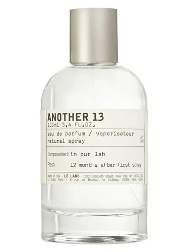

Another 13
- Unisex
- Familia floral
- Lanzado en 2010
Con caja$2,500Te lo conseguimos en 2 días a 1 semanaSin caja$950Te lo conseguimos en 2 días a 1 semana
No disponible: te lo conseguimos en 2 días a 1 semana
Cómo huele
Almizclado
Ámbar
Amaderado
Animálico
Frutal
Sus notas
Salida
peramanzanacítricos
Corazón
ambrette (malva almizclera)salicilato de amilomusgojazmín
Fondo
iso e supercetaloxambrettolidehelvetolide
Another 13 de Le Labo es un perfume floral para mujer y hombre, lanzado en 2010. Abre con pera y manzana, en el corazón tiene ambrette (malva almizclera) y salicilato de amilo y deja un fondo de iso e super y cetalox. Lo que más se siente: almizclado, ámbar y amaderado.